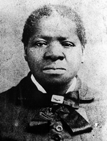
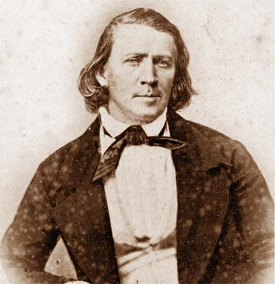
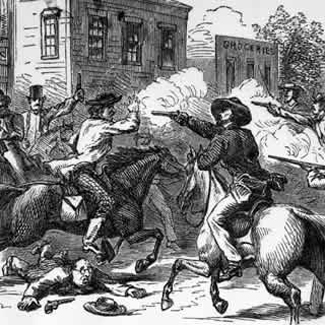

|
The topic of black slavery on the trans-Mississippi Western frontier might, at
first glance, hardly seem worthy of consideration. After all, the total number
of blacks living west of the Mississippi River on the eve of the Civil War
numbered a mere 5,500. Of that number, only a fraction, probably less than
1,000, were or had ever been slaves. The mere presence of involuntary servitude
in the West, moreover, ran contrary to the prevalent image of an American
frontier that Frederick Jackson Turner later celebrated as characterized by
"individualism, economic equality, freedom to rise [and] democracy." In fact,
American settlers, white and black, moving along this frontier from Iowa to the
Pacific Coast, confronted the peculiar institution throughout the crucial period
from 1830 to 1865. This slavery, in turn, affected Westerners, and Americans
generally, in ways that transcended the relatively small number of blacks
actually held in bondage.
Iowa, for example, was a trans-Mississippi frontier region where black
slavery existed as early as the 1830s. This was the case despite the provisions
of the Missouri Compromise of 1820, which prohibited slavery in Iowa due to its
location north of the line 36¡ 30'. According to historian Joel H. Silbey,
"great support of slavery existed" in Iowa until about 1846 due to the large,
early influx of white Southerners into the region.
Approximately 150 slaves were held in Iowa during the 1830s, not a large
number, but worthy of note because their presence suggests a local tolerance for
the peculiar institution. Both U.S. Senators, Augustus C. Dodge and George W.
Jones, were listed as slaveholders following Iowa's 1846 ascension to statehood.
Iowa's most famous slave, Dred Scott, resided in Davenport with his master, Dr.
John Emerson, during the 1830s--two decades before the Supreme Court's famous
decision denied him his freedom and humanity. As late as 1860, black slaves
continued to be held in the Hawkeye State.
In addition to their tolerance for black slavery, citizens of Iowa enacted
legislation restricting the actions of black residents, both slave and free. In
1839, for example, the Iowa Legislature enacted a law prohibiting the entry of
individual free blacks and mulattoes without a certificate of freedom and the
posting of a $500 bond. Blacks also were prohibited from voting, belonging to
the state militia, and intermarrying with whites. Iowa's two U.S. Senators gave
strong backing to the federal Fugitive Slave Act of 1850, a position that stood
in sharp contrast to that of most other Northern senators. One Iowa newspaper
characterized this measure as "the most important, equitable and just portion"
of the Compromise of 1850. A year later, Iowa's legislature enacted a law
completely prohibiting the migration of free blacks into the state.
Despite these restrictions, Iowa's black population increased threefold from
333 to 1069, during the decade of the 1850s. Much of this increase resulted from
the influx of fugitive slaves fleeing bondage in neighboring slave states,
particularly Missouri. Many Iowans, particularly Quakers living in the southern
part of the state, opposed slavery and became the backbone of the underground
railroad there. In addition, by the 1850s, Iowans generally became less tolerant
of black slavery as more and more settlers from non-slaveholding states emigrated
into the Hawkeye State, displacing Southerners who had heretofore been dominant.
But Iowa's ambivalent attitudes and practices regarding slavery and the
treatment of blacks generally represented a pattern of behavior transposed to
other parts of the trans-Mississippi frontier.
California was one such region. Prior to California's American settlement and
annexation, blacks or people of mixed black-Mexican origins played a significant
role, first under Spanish and later under Mexican rule. An estimated 20 percent
of early California's settlers were black or had some African ancestry. Among
the prominent individuals of mixed black-Mexican background was Pio Pico, the
last governor of Mexican California. Black slavery itself had been abolished
under Mexican law following that country's independence from Spain in 1821.
The Americanization of California in the wake of the gold rush brought
changes. Black Americans joined whites in migrating to the gold fields. Over
2,200 black settlers had arrived in California by 1852. According to historian
Rudolph M. Lapp, an estimated "200 to 300 black men and women" were held "in the
mining country ... as slaves ... at any given time in the early 1850s." In all,
there were "probably between five hundred and six hundred slaves involved in the
gold rush." Black slaves also were held in parts of California outside the
mining regions. Two dozen black slaves were brought into southern California by
a group of Mormon pioneers who settled at San Bernardino. Significantly, black
slavery existed in California despite its statutory prohibition by California's
state constitution and by the provisions of the Compromise of 1850. Many of
these slaves, however, arrived prior to the time that slavery was clearly
prohibited under the provisions of the Compromise of 1850. Nevertheless, a large
number of bondsmen were brought into California after that date by slaveholders
aware of this prohibition but willing to gamble to realize a quick profit. They
reasoned that a few years of lucky gold mining with slave labor could reap
profits far exceeding those obtained by working an entire lifetime in Southern
agriculture.
Slaves in California labored under diverse conditions. Although cases existed
of individual slaveholders migrating to California with as many as twenty to
thirty slaves, most bondsmen came in groups of two or three. The treatment of
these blacks also varied, depending of course on their individual masters. In
general, slavery in California appears to have been less severe than in the
traditional slaveholding areas of the South. As Lapp notes, "the daily lives of
blacks in California were probably very similar to that of the average white
miner, with the exception of their servile status." These slaves, moreover, were
frequently given the opportunity to purchase their freedom with profits earned
in mining. This emancipation-by-self-purchase could involve the slave working
for a stated period of time (during which the master would benefit from his
labor) or the payment of a specified amount of gold dug. According to one
scholar, California slaves spent a total of $750,000 to buy their freedom.
|

Biddy Mason arrived in California as a slave,
eventually secured her freedom, and became one of the wealthiest
residents of Los Angeles.
|
Black slavery in California continued largely due to a lack of adequate law
enforcement--a common problem throughout the frontier West. In 1852 the state
legislature enacted a fugitive slave law that gave some legal backing to
California's peculiar institution. Under its provisions, slaves who had escaped
into California or who entered the state prior to statehood were considered
fugitives and liable to arrest. In addition, whites who aided black fugitives
were subject to a $500 fine and a prison sentence. Judges sympathetic to
slaveholders interpreted this law in such a way as to allow slaveholders to
bring blacks into the state, work them in the mines, and ultimately return to
the South with both their profits and slaves.
Other anti-black measures also were enacted in California during the 1850s.
California lawmakers, inspired by the earlier actions of their Iowa
counterparts, passed laws prohibiting blacks from voting, belonging to the state
militia, or testifying in court in cases involving whites. On three different
occasions--in 1849, 1852, and 1857--legislation was proposed to prevent further
black migration into the state. Although all three efforts failed, the rate of
black migration into California leveled off by 1860 with a total of 4,086 blacks
listed as living in the state. Indeed, by this time, California's black
population was eclipsed by that of two other nonwhite minorities--the Chinese,
numbering 35,000, and Latin Americans, totaling 50,000. Whites perceived these
two groups as posing a greater threat than the relatively small black
population, and Chinese and Latin Americans thus bore the brunt of white
discrimination. This ultimately paved the way for improved treatment of black
Californians.
Reflective of this trend, by the late 1850s California's slave population
gradually withered away. This reduction was accomplished, in part, by the
willingness of many California slaveholders to free their slaves, either
voluntarily or under pressure from an increasingly militant black community.
Free blacks, along with sympathetic whites, grew less willing to accept black
slavery in their midst. By 1855, California's 1852 fugitive slave law was
allowed to lapse. Also, the fallout from the 1858 Archy Lee fugitive slave case
gave California slaveholders new cause for concern. Archy, a black slave, had
been brought into California from Mississippi by his master, Charles A. Stovall,
in 1857. Soon after arriving, Archy fled his bondage because Stovall decided to
return to Mississippi. Stovall then sought legal redress. The California Supreme
Court declared that legally Archy deserved his freedom. But it decreed that
"since [Archy's] master was an inexperienced young man and not in good health
and since this was the first case of its kind" Archy should be returned to
Stovall and slavery. In the face of this controversial, convoluted decision, the
aroused, angry, black population of San Francisco (where the case was tried),
aided by sympathetic whites, helped Archy to regain his freedom. It therefore
became obvious to Southern slaveholders contemplating migration to California
that the security of their chattel property could no longer be guaranteed. Thus,
by the late 1850s the influx of black slaves into California virtually ended,
further hastening the disappearance of black slavery.
New Mexico, like California during the years immediately prior to its
annexation to the United States, experienced a period of ambivalence on the
question of black slavery. Under the terms of the Compromise of 1850, the
question of black slavery was left to New Mexico residents according to popular
sovereignty. In New Mexico, as in California, black slavery had been prohibited
by the Mexican government prior to the American takeover. But two other forms of
human bondage had flourished during the Spanish and later Mexican periods.
Indian slavery, resting on custom rather than written law, dated from the
seventeenth century. It resulted from warfare between Spanish-Mexican settlers
and local Indian tribes or among the rival Indian tribes themselves. Captured
Indians, usually children or adolescents, were bought and sold in much the same
way as blacks on American slave markets. A healthy Indian boy or girl could
bring $400. Although never recognized by statute, Indian slavery nonetheless
continued to flourish in New Mexico following its annexation to the United
States. By the 1860s, an estimated 1,500 to 3,000 Indian slaves were held in New
Mexico.
Peonage, the other form of human bondage widespread throughout New Mexico,
unlike Indian or black slavery, was not based on the sale or purchase of human
beings, but on "contract between master and servant." Much like the system of
indentured servitude in the American colonies prior to the Revolution, peons
were bound to their masters by some form of indebtedness. Once the debt was
discharged, the peon supposedly was released of his servile status. The statutes
governing this system, however, favored the master and made it extremely
difficult for the peon to discharge his obligation. As a result, he frequently
found himself, and indeed his family, in perpetual servitude. Peonage received
legal recognition in New Mexico under the Master and Servant Law enacted in
1851, thereby establishing Indian slavery and peonage as important labor systems
in the territory. Indeed, as late as 1865, the family of New Mexico's Republican
delegate to Congress, J. Francisco Chavez, held more peons and Indian slaves
than any other individual in the territory.
|

Brigham Young
|
Little support existed, however, for black slavery in New Mexico during the
early territorial period. Though the 1850 census listed twenty-two blacks living
in the territory, there were no slaves enumerated among them. The climate and
economic conditions within the territory were "entirely unsuited for [black]
slave labor," explained Hugh N. Smith, New Mexico's territorial delegate to
Congress in April 1850. According to Smith, "the country is cold ... exceedingly
mountainous" with its "general agricultural products [consisting of] wheat and
corn." Then, alluding to the existing systems of Indian slavery and peonage, he
noted, "Labor is exceedingly abundant and cheap. It may be hired for three or
four dollars a month, in quantity quite sufficient for carrying on all the
agriculture of the territory."
Although only a handful of free blacks lived in New Mexico, territorial
lawmakers nevertheless insisted upon discriminatory legislation. Blacks were
prohibited from voting and holding public office. In 1856, the territorial
legislature passed a black exclusionary law similar to that in force in Iowa.
This law forbade the further immigration of free blacks into New Mexico and
required those currently living within the territory to post a $200 bond to
ensure their good behavior. This law also prohibited marriages between blacks
and Caucasians.
In 1859 the status of blacks within New Mexico further deteriorated when the
territorial legislature approved a measure legalizing black slavery. This "Act
for the Protection of Slave Property" resembled the slave codes in force in the
slaveholding South by defining and protecting the property rights of white
masters. No slave was permitted to be away from his master's premises after
sunset or before sunrise without a written pass. The theft of, or abetment in
escape of, a slave was punishable by imprisonment from four to ten years and
fines. The act further prohibited the arming of slaves except by the master's
written consent and absolutely forbade the emancipation of slaves within the
territory.
Why did New Mexico enact this measure so late in the antebellum period?
First, despite what contemporaries believed were the natural limits of working
slaves in the West, at least two prominent territorial officials held black
slaves. Territorial Governor William Carr Lane and Chief Justice of the New
Mexico Supreme Court Grafton Baker constituted a "respectable minority,"
undoubtedly anxious to have their slave property protected by law. The second
driving force behind this statute was Miguel A. Otero, New Mexico's territorial
delegate to Congress. Otero was motivated by both personal and political
motives. During his first term in Congress, he had married a Southern woman and
increasingly became identified with the social life of Southerners in
Washington. These connections in turn affected his official interests. Resulting
mainly from Otero's influence, a Southern clique of federal appointees
controlled political affairs within New Mexico. The territorial governor,
secretary, and editor of the territory's leading newspaper were all Southerners.
On the eve of the Civil War, then, it appeared to observers that New Mexico had
undergone a "complete conversion to Southern principles."
New Mexico, in legalizing black slavery, appeared to be following in the
footsteps of its sister territory to the north, Utah, which in 1852 had adopted
its own "Act in Relation to Service." Like New Mexico, Utah under the provision
of the Compromise of 1850 had been allowed the option of popular sovereignty.
Utah's "Act in Relation to Service" resulted from instructions by Brigham Young,
territorial governor and Mormon church leader. Several factors motivated Young.
Although the number of black slaves in Utah numbered less than 100 (out of a
total black population of less than 200), slave owners ranked among Utah's most
prominent church and community leaders. Abraham O. Smoot, the first mayor of
Salt Lake City; Charles C. Rich, a Mormon Apostle; and William H. Hooper, Utah's
delegate to Congress--like their counterparts in New Mexico--constituted a
"respectable minority." Young also hoped to win new converts among Southern
slaveholders who he hoped might be persuaded to migrate to Utah if their slave
property were protected by law.
Young's proslavery action was motivated by another factor, perhaps the most
important of all. This involved the impact of certain racist concepts that had
their basis in Mormon beliefs. According to Mormon dogma, blacks were inherently
inferior and therefore were fit subjects for involuntary servitude. Like other
nineteenth-century biblical literalists, the Mormons ascribed the inferiority of
black people to their alleged descent from the accursed lineage of Ham and
Canaan--a lineage destined to be "servants of servants." In this spirit, and
following the examples of Iowa and California, Young and other Utah territorial
officials supported legislation that prohibited blacks from voting, holding
public office, belonging to the territorial militia, and intermarrying with
whites. Within the Mormon church itself, blacks were denied entry into its
priesthood, a lay organization open to all other adult males regardless of race
or ethnic origins. This ban continued until it was finally lifted in June 1978.
While black slavery gained legal recognition in both Utah and New Mexico
during the 1850s, national attention on slavery's expansion into the territories
was riveted on Kansas. Here proslavery settlers were attempting to establish the
peculiar institution on a firm footing. Actually, the first slaves, 500 in all,
entered what became known as Kansas in 1718. They were brought from Santo
Domingo by Francis Renault to work in the lead mines near Pinsburg. Black slaves
also were present at the early forts established in Kansas to protect trade
routes to Santa Fe. After 1820, however, black slavery was outlawed in this
region under the terms of the Missouri Compromise because it, like Iowa, was
north of the line 36¡ 30'. This prohibition remained in force until the
enactment of the Kansas-Nebraska Act of 1854 that allowed local residents
popular sovereignty.
Kansas, in the eyes of many, appeared promising as an arena for the use of
black slave labor. For one thing, Kansas was bounded on three sides by regions
where slavery flourished or was sanctioned by law-Missouri to the east, the
Creek nation to the south (where 23,000 black slaves were held), and Utah to the
west. Also, the climate and soil of Kansas initially appeared ideal for the
production of hemp and tobacco--both products produced elsewhere with black
slave labor. These products, moreover, could be sent down the Missouri River to
St. Louis and from there down the Mississippi, thereby tying Kansas to the South
economically. Many Southerners believed that some sort of unwritten compact
among national leaders would make Kansas a slave state and keep neighboring
Nebraska free.
By the early 1850s settlers from neighboring Missouri and other slave regions
began to move into Kansas, some bringing their black slaves. In 1855 Kansas had
195 slaves and a year later "over 400," according to one estimate. These blacks
were scattered throughout the territory. In 1855 the territorial legislature
passed "An Act for the Protection of Slave Property." In describing the
treatment of slaves in Kansas, historian Charles E. Cory noted that "the rigor
and cruelty of slavery" evident in the South "was not present here." Instead,
Kansas slaves were given "general kind treatment" and, according to Cory, "the
slaves did very little work."
|

Differences over the question of slavery in Kansas
led to violent clashes. "Bleeding Kansas" was a major factor in
driving the nation toward civil war.
|
Northerners and antislavery advocates viewed the issue of slavery in Kansas
differently. Their opposition to Southern efforts to turn Kansas into a slave
state helped generate the violence associated with "Bleeding Kansas" and led to
the formation of the Republican party, a political organization opposed to
slavery in Kansas and, initially, adverse to the extension of slavery into all
western territories. Several factors favored the North in the contest over
Kansas. For one thing, "the populous North," in the words of historian James A.
Rawley, "possessed the greater opportunity to dispatch settlers into Kansas,"
whereas the South was hindered by "the cost and hazard of removing slaves to a
territory where competition with free farmers might be keen." In addition, not
all Missourians migrating to Kansas were potential slaveholders or even
proslavery in their beliefs. Many were non-slaveholding small farmers who
appeared willing to accept Kansas as a free state. Finally, the geography and
climate of Kansas were not conducive to producing the great staple slave crops
of cotton, sugar, or rice. Observers noted that breadstuffs and livestock, the
most likely crops to come out of this region, could be produced most cheaply by
free labor. The climate of most of Kansas was generally subhumid, treeless,
semiarid, and subject to scorching summers and harsh winters. Kansas stood in
stark contrast to settled slaveholding regions to the east and south. Thus
slaveholders desiring to move west found the relatively unsettled regions of
Arkansas and Texas much more appealing.
It is not surprising, therefore, that by the late 1850s Kansas held few
prospects as a slaveholding region. In fact, even among Kansas slaveholders
themselves, the peculiar institution had a precarious existence. According to
Cory, slaves were brought in "as a part of the proslavery propaganda--not for
profit." These owners merely "wanted to establish the 'institution'"
demonstrating "its physical existence here." Thus, when proslavery advocates
lost in Kansas, slaveholders were quick to leave the region with their chattel
property. By the time of the 1860 census, only two black slaves were listed as
living in the entire territory. That same year, the Kansas legislature, just
prior to securing statehood, implemented "An Act to Prohibit Slavery in Kansas"
and repealed the Slave Code of 1855.
On the eve of the Civil War, then, the residents of Iowa, California, and
Kansas had determined that black slavery was unsuitable to their respective
states. Only in New Mexico and Utah did slavery enjoy respectability under
territorial statutes. In Utah, Mormon religious beliefs, not economic necessity
or widespread practice, lent support to slavery's legal status there. And in
1862, when Congress outlawed black slavery in all federal territories, Utah
slaveholders quietly acquiesced. Officials in New Mexico acted even earlier,
repealing the "Otero Slave Code" in 1861, following the outbreak of the Civil
War and after pro-Union elements gained political control of New Mexico, ousting
Miguel Otero and the pro-Southern clique previously in control of territorial
politics.
Other parts of the trans-Mississippi West settled just before or during the
Civil War also proved unsuitable to black slaveholding. Although a few slaves
were found after 1859 in the Pikes Peak region of Colorado, and later in the
Montana gold fields around Virginia City, their presence was noted more as a
curiosity than as a precursor of future large-scale slaveholding in these
regions. Confident that slavery was no longer an issue in the West, Republicans
in 1860 felt safe in backing off from their long-standing position of absolute
prohibition of slavery in all newly formed territories. Ironically, the
Republicans now accepted the old popular sovereignty doctrine of Stephen Douglas
and his Democratic allies--allowing local residents to vote on the status of
slavery as they pleased. In the end, it made little difference: residents of
Nebraska, Nevada, Colorado, Dakota, Montana, and Arizona all approved statutes
prohibiting slavery in their respective territories. Nevada achieved statehood
in 1864 just in time to help reelect Abraham Lincoln to a second term as
president and to help ratify the Thirteenth Amendment, forever outlawing black
slavery in the United States.
Source: Randall M. Miller and John David Smith, eds. Dictionary of
Afro-American Slavery (Westport, CT: Praeger, 1997), 798-806.
|